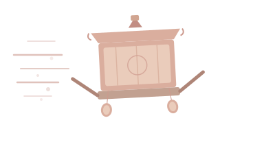

今年 4/12 媽祖再次起駕，8 天 7 夜徒步到北港，來回四百公里。我們準備了至少 1,000 雙機能襪，想在繞境沿途送給走到腳痠的香燈腳，讓大家走得更踏實。每一雙都會附上一張結緣小卡，帶著我們共同的祝福上路。
如果大家的心意超過了目標，多出來的資源不會浪費——加碼更多雙襪子，或是全數捐給繞境沿線的偏鄉弱勢團體。

2025 年，我們一行好友第一次跟著白沙屯媽祖走。八天的路上，沿途無數素未謀面的香燈腳遞水、送飯、替我們貼腳底，那份毫無保留的善意，深深刻在心裡。
走完那趟路，我們決定：2026 年，換我們來照顧更多走在路上的人。
今年 4/12 媽祖再次起駕，8 天 7 夜徒步到北港，來回四百公里。我們準備了至少 1,000 雙機能襪，想在繞境沿途送給走到腳痠的香燈腳，讓大家走得更踏實。每一雙都會附上一張結緣小卡，帶著我們共同的祝福上路。
如果大家的心意超過了目標，多出來的資源不會浪費——加碼更多雙襪子，或是全數捐給繞境沿線的偏鄉弱勢團體。
大家的心意多出來不會浪費，我們會走兩條路：
我們承諾做到三件事：
6 公分圓形透明貼紙，貼在每雙襪子的包裝上。為香燈腳護足結緣，也為偏鄉需求團體送暖。掃描 QR Code 即可回到本頁了解活動全貌。
貼紙的早期版本中，原本有一幅「粉紅超跑」鑾轎插圖作為背景——那是信徒對白沙屯媽祖鑾轎的暱稱，因為鑾轎上覆蓋著粉紅色的遮雨布，加上進香速度極快，彷彿一輛粉色超跑在鄉間飛馳。
最終版貼紙為了確保 QR Code 在 6cm 的小面積上能被清晰掃描，我們將版面精簡到只保留祝福語、活動標語和 QR Code 三層核心元素。但「粉紅超跑」的精神從未離開——它就是這整場進香最動人的畫面：媽祖帶著信徒的虔誠，一路疾行在台灣西海岸的田間小路上。
繞境路線從苗栗到雲林，經過的很多鄉鎮是台灣最典型的偏鄉——青壯外流、獨居老人多、社福資源少。超出的款項與物資，我們會優先送往這些地方：
「媽祖走過的路，
也是他們每天生活的地方。」
本報告將於 2026 年 4 月底前完成更新，完整記錄每一筆善款的流向和每一雙襪子的去處。
＊ 本區將記錄實際發出雙數、發放日期與路段、團隊分工等基本資訊。
每一筆收入與支出，全數透明公開。
＊ 每一位贊助者的姓名（或匿名代號）與金額將逐筆列出。結餘款項將捐贈給沿線偏鄉社福團體。
物資與善款的具體去處，附上對接單位與簽收憑證。
＊ 具體對接單位及數量將於進香結束後確認，捐款收據或物資簽收照片將附於此處。
進香路上的結緣瞬間，以及送到偏鄉長輩手中的溫暖畫面。
照片將於進香期間及結束後更新
預計 10–15 張精選紀錄
＊ 包含：每日發放現場、信徒收到襪子的表情、偏鄉長輩收到物資的畫面、團隊合照等。
每一位贊助者的名字，都在這份名單上，跟著媽祖走完全程。
待進香結束後公布完整名單
（依贊助者意願選擇具名或匿名）
＊ 名單同時手寫一份紙本，8 天全程隨身攜帶，在北港朝天宮進火儀式時向媽祖稟報。
「腳踏實地，平安順行。」